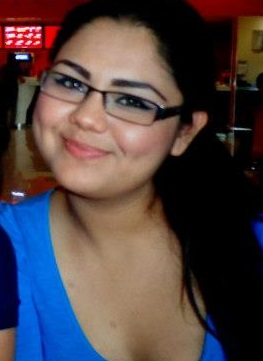

Hola, mi nombre es Mayra Olague estudio en en Instituto Tecnologico de Culiacán y actualmente curso el sexto semestre de la carrera Ingenieria en Tecnologías de la Información, aquí podrás encontrar información acerca de los proyectos realizados en el curso de Programación Web. Esta página personal ha sido diseñada para un proyecto del Curso de Programación Web.
